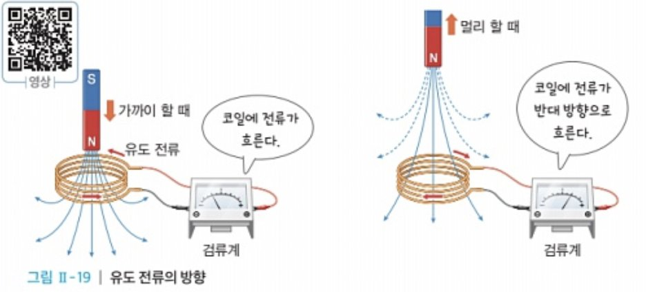
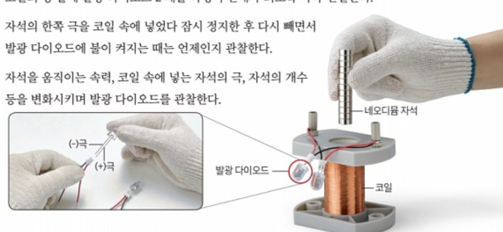
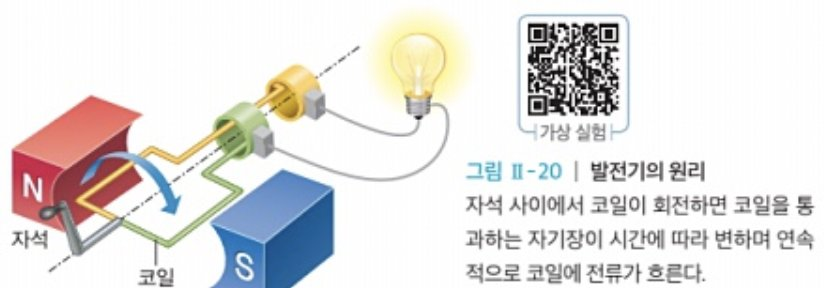
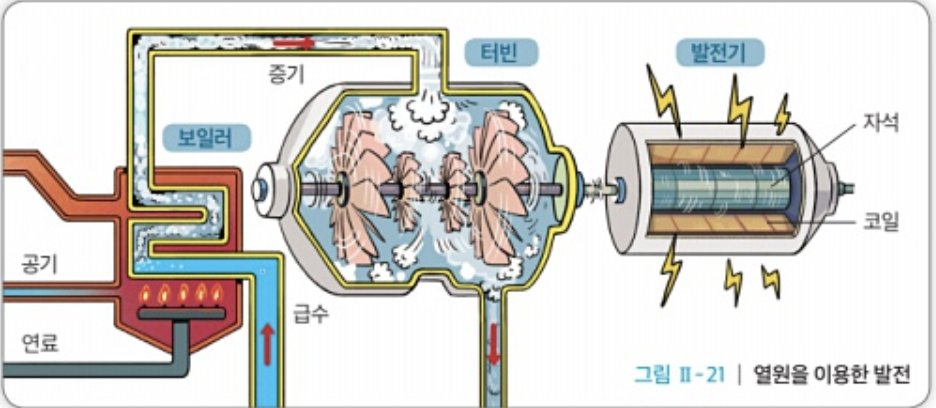
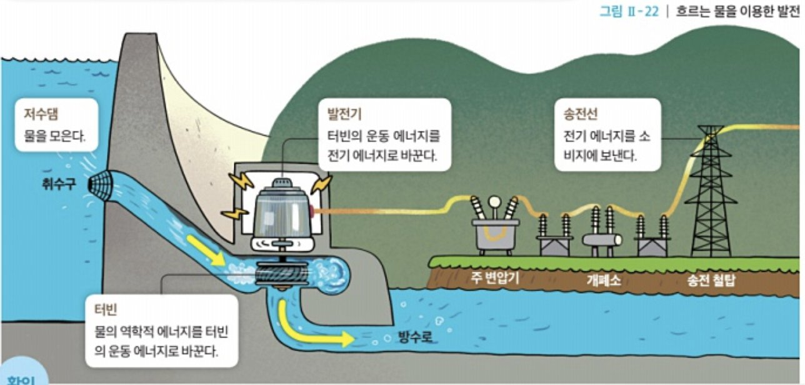
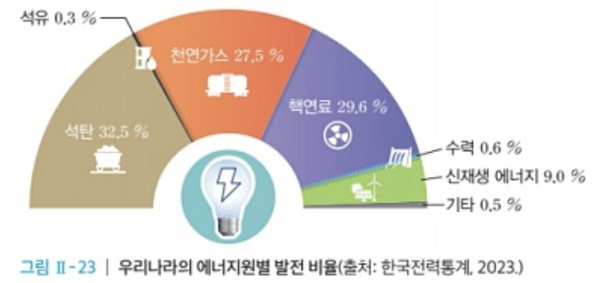
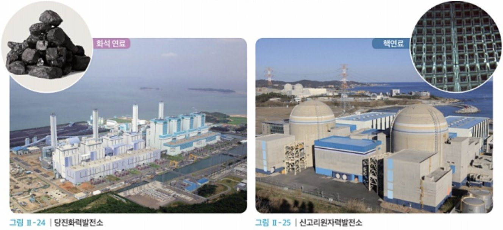

나침반 바늘은 아주 작은 자석이에요
바늘의 빨간 끝이 N극, 회색 끝이 S극이에요.
같은 극은 밀고, 다른 극은 당겨요
그래서 바늘의 빨간 끝(N)은 큰 자석의 N극에서는 밀려나고, S극 쪽으로는 끌려가요.
큰 자석 둘레에 나침반을 놓아 봐요
파란 테두리 나침반은 손가락으로 끌어 옮길 수 있어요.
빨간 끝이 가리키는 쪽을 이으면 N극에서 나와 빙 돌아 S극으로 들어가는 선이 돼요. 이게 자기력선, 화살표 방향이 자기장 방향이에요.
자석 가까이는 선이 빽빽 = 자기장이 세요. 멀수록 듬성듬성 = 약해요.
점을 끌고 다녀 보세요
방향 = 그 자리에서 나침반 빨간 끝이 가리키는 쪽. 세기 = 그 자리에서 힘이 얼마나 센지 = 자기력선이 얼마나 빽빽한지.
「자기장이 변한다」 = 방향이 바뀌거나, 세기가 바뀌거나, 둘 다. 자석을 코일 쪽으로 내리면 코일 자리의 세기가 커지고(방향은 그대로), 발전기 코일이 돌면 코일을 통과하는 방향까지 바뀌어요.
전류가 뭐고, 어디에 흐르는 거예요?
전류 = 전선(구리선) 속에 원래 들어 있는 아주 작은 알갱이 전자들이 한 방향으로 줄지어 이동하는 것이에요. 물이 관을 따라 흐르듯 전기가 전선을 따라 흘러요.
보통은 전지(건전지)가 전자를 밀어서 전류가 흘러요. 전지가 없으면 전자는 가만히 있어요.
① 전지 안에서 화학 반응이 일어나서 (-)쪽에는 전자가 잔뜩 몰리고, (+)쪽에는 전자가 모자라요.
② 전자는 (-) 전기를 띠어요. 자석에 N·S가 있듯 전기에는 + 와 -가 있고, 규칙도 똑같아요: 같은 것끼리 밀고, 다른 것끼리 당겨요.
③ 그래서 (-)쪽에 꽉 찬 전자들이 서로 밀어내서 전선으로 나가고, (+)쪽은 전자를 당겨요. 전자는 전선을 한 바퀴 돌아 (+)쪽으로 들어가요. 이게 「전지가 전자를 민다」는 뜻이에요.
자석은 여기서 안 나와요. 자석은 다음 카드에서 「전지 대신 자석으로 전자를 미는 방법」으로 나와요.
물로 생각하면: 전선은 물이 꽉 찬 관, 전자는 그 물, 전지는 물을 미는 펌프예요. 펌프가 없으면 물이 관에 가득 있어도 안 흘러요. 펌프를 켜야 물이 빙글빙글 돌아요.
그런데 전자기 유도에서는 전지가 없어요. 대신 자석을 움직이는 것이 펌프 역할을 해서 전자를 밀어요. 이게 다음 카드 이야기예요.
「전자기 유도」 = 자석으로 전기를 끌어냈다
전기 + 자기(자석)
이끌어 내다, 일으키다
코일과 검류계를 전선으로 이어 한 바퀴 고리를 만들어요. 전지는 하나도 없어요.
그런데 자석을 움직이면 고리 속 전자들이 저절로 움직이기 시작해요. 자석(자기)이 전기를 끌어낸 거라서 전자기 유도, 그렇게 끌려 나온 전류라서 유도 전류(유도된 전류)예요.
유도 전류는 코일 → 전선 → 검류계 → 다시 코일, 이 고리를 따라 돌아요. 아래에서 자석을 끌어 보면 노란 알갱이(전자)가 도는 게 보여요.
검류계 = 전류가 「어느 쪽으로」 흐르는지 보여 주는 계기
| 바꾼 것 | 코일 속 전류 | 바늘 |
|---|---|---|
| 집게 전선 두 개 서로 바꿈 | 그대로 | 반대 |
| 코일 감은 방향 반대 | 반대 | 반대 |
| 자석 극(N↔S) 또는 움직임(다가옴↔멀어짐) | 반대 | 반대 |
| 위의 것 두 개를 동시에 | 반대의 반대 = 처음과 같음 |
진짜 자석은 N·S가 항상 그대로예요. 전자석은 전류가 흐를 때만 자석이고, 전류 방향을 바꾸면 N·S가 바뀌어요. 전류가 없으면 그냥 쇳덩이예요.
이 전자석이 이 단원의 열쇠예요. 전자기 유도에서 코일이 「오지 마!」 하고 자석이 되는 것도 바로 이 전자석이에요.
❶ 바늘은 시소예요. 가운데 핀에 꽂힌 막대 하나예요. 위쪽 = 우리가 보는 바늘 끝, 아래쪽 = 꼬리. 한 막대라서 꼬리가 오른쪽으로 가면 바늘 끝은 왼쪽으로 가요.
❷ 꼬리에는 가는 전선이 감겨 있어요(코일). 단자로 들어온 전류가 바로 이 코일을 지나서 반대쪽 단자로 나가요. 전류가 흐르는 동안 꼬리는 전자석이 되고, 꼬리 끝이 N 또는 S가 돼요. 왼쪽 단자로 들어오면 꼬리 끝 N, 오른쪽 단자로 들어오면 꼬리 끝 S (전류 방향이 반대면 극도 반대).
❸ 꼬리 밑에는 진짜 자석(왼쪽 N · 오른쪽 S)이 박혀 있어요. 꼬리 끝이 N이면 왼쪽 N은 밀고 오른쪽 S는 당겨서 꼬리가 오른쪽으로 → 바늘 끝은 왼쪽.
❹ 꼬리 끝이 S면 거꾸로 꼬리가 왼쪽으로 → 바늘 끝 오른쪽. 전류가 0이면 꼬리가 자석이 아니라서 바늘은 가운데. 전류가 셀수록 전자석이 세져서 더 많이 기울어요.
보통 전류계는 0이 왼쪽 끝이라 한쪽으로만 움직여요. 검류계는 0이 가운데라서 전류가 들어오는 쪽에 따라 왼쪽·오른쪽으로 움직여요. 바늘이 많이 움직일수록 전류가 세요.
바늘이 실제로 어느 쪽으로 가는지는 연결 방법에 따라 달라요. 그래서 시험은 「N극을 넣을 때 왼쪽」처럼 하나를 알려 주고, 나머지가 같은 쪽인지 반대쪽인지만 물어요.
자석에서 뭐가 나와서 코일로 들어가는 거예요?
| 자석이 다가올 때 | 역할 | |
|---|---|---|
| ① 자석이 내보내는 자기력선 전체 수 | 그대로 | 자석은 늘 같아요 |
| ② 그중 코일 구멍을 통과하는 자기력선 수 | 늘어나요 | 원인 · 「자기장이 변한다」는 이것 |
| ③ 코일(전자석)이 만든 자기장 | 잠깐 생겨요 | 결과 · ②를 막으려는 반응 |
손전등 비유: 손전등 밝기(①)는 그대로인데, 구멍 뚫린 종이에 가까이 대면 구멍을 통과하는 빛(②)이 많아져요.
코일의 자기장도 생기니까 변화는 맞지만, 전류가 흐른 다음에 생기는 결과라서 교과서는 이걸 「코일이 전자석이 된다」고 따로 말해요.
| 문제 속 말 | 누구의 자기장 |
|---|---|
| 코일을 통과하는 자기장(자기력선 수)이 변한다 | 자석 |
| 코일 윗면이 N극이 되어 밀어낸다 / 당긴다 | 코일 (전자석) |
아니에요. 자석에서 코일로 넘어가는 건 없어요. 전자는 처음부터 코일 구리선 속에 꽉 차 있어요. 자석은 「자기장」(보이지 않는 힘)으로 코일 구멍을 꿰뚫고 있을 뿐이에요.
코일은 원래 자기장이 없어요. 처음엔 자석의 자기장(파랑)만 있어요. 전류가 흐르는 동안에만 코일도 자석(전자석)이 돼서 자기장(주황)을 만들어요. 그래서 「두 자기장이 만난다」는 건 움직이는 동안에만 맞아요.
전류가 흐르는 코일은 그 자체가 자석(전자석)이 돼요. 코일을 통과하는 자기력선의 수가 변하면, 코일은 그 변화를 막는 자석이 되려고 해요. 자석이 되려면 전류가 필요하니까 코일 속 전자들이 떠밀려 돌기 시작해요.
다가오면 「오지 마」(같은 극), 멀어지면 「가지 마」(반대 극). 막는 방향이 반대라 전류 방향도 반대. 멈추면 막을 게 없으니 전류 0.
코일 속 전자는 어느 쪽으로 돌까?
자석 아래쪽 극
움직임
① 코일 윗면 극 정하기: 다가오면 같은 극(오지 마), 멀어지면 반대 극(가지 마).
② 전류 방향(위에서 볼 때): 윗면이 N이면 시계 반대 ↺, 윗면이 S면 시계 방향 ↻. 오른손 네 손가락을 전류 방향으로 감으면 엄지가 N극을 가리켜요.
③ 전자는 전류와 반대로 돌아요. 전류 방향은 옛날에 「+ → -」로 정한 약속이고, 실제로 움직이는 전자는 반대예요.
시험은 거의 「전류 방향이 같은지 반대인지」만 물어요. ①만 확실히 하면 돼요.
코일 끝 ①·② 와 검류계 바늘
바늘 방향은 이 순서로 정해져요. ❶ 코일 속 전류가 도는 방향(자석이 정함) → ❷ 전선을 어느 쪽으로 감았나(그래서 끝 ①·② 중 어디로 나오나) → ❸ 그 끝이 검류계 어느 단자에 꽂혔나 → 바늘.
자석 (N극이 아래)
전선 감은 방향
호스 비유: 물이 빙글 도는 방향은 같아도, 호스를 어느 쪽으로 감았냐에 따라 물이 위 구멍(끝 ①)으로 나오기도 하고 아래 구멍(끝 ②)으로 나오기도 해요.
시험에서는: 그림이 「N극을 넣으면 바늘 왼쪽」처럼 기준 하나를 줘요. 나머지는 바꾼 게 홀수 개면 반대, 짝수 개면 같음만 보면 돼요. 감은 방향은 그림에 그려져 있을 때만 따져요.
자석을 위아래로 끌어 보세요: 노란 알갱이가 전자예요
자석(빨강·파랑 막대)을 손가락으로 위아래로 끌어요. 빨리 움직일수록 바늘이 크게 움직여요.
코일을 지나는 선의 수가 「변할 때」만 전기가 생겨요
자석을 코일 쪽으로 내리면 코일 구멍을 지나는 자기력선이 늘고, 올리면 줄어요. 이렇게 변하는 동안 코일에 전류가 흘러요.
이 현상이 전자기 유도, 이 전류가 유도 전류예요.
자석을 코일 위에서 멈추면 선은 많아도 변하지 않으니 전류 0. 자석 대신 코일을 움직여도 똑같이 흘러요.
검류계는 0이 가운데 있는 전류계예요. 바늘이 왼쪽이냐 오른쪽이냐가 전류 방향이에요.

어느 극을, 어떻게 움직일까?
아래쪽 극
움직임
코일은 「변화」가 싫어요
코일에 전류가 흘러서 변화를 막는 쪽 자석(전자석)이 돼요. 다가오면 같은 극이 돼서 밀어내고(오지 마!), 멀어지면 반대 극이 돼서 당겨요(가지 마!).
코일이 되는 극이 반대면 전류 방향도 반대. 그래서 가까이 ↔ 멀리, N극 ↔ S극을 바꾸면 바늘이 반대로 가요.
시험에는 「방향이 반대」라는 결론만 나와요.
N극이 「되어서」 전류가 흐르는 게 아니에요
코일은 그냥 구리선 뭉치예요. 혼자서는 N극도 S극도 못 돼요. 코일이 자석이 되는 방법은 딱 하나, 전류가 빙글 도는 것이에요(전자석).
그러니까 「N극이 된다」와 「전류가 흐른다」는 같은 일을 두 가지로 부른 것이에요. 순서로 보면 전류가 먼저예요.
「변화를 막는 쪽」은 그 밀리는 방향을 알려 주는 규칙이에요. 막으려고 코일이 마음먹는 게 아니라, 늘 그 방향으로 밀린다는 뜻이에요.
동그란 코일은 어디가 N극이에요?
코일은 막대가 아니라 고리예요. 그래도 전류가 빙글 돌면 자기장은 고리 구멍을 곧게 뚫고 지나가요. 한쪽 구멍으로 나오는 쪽 = N극, 들어가는 쪽 = S극. 그래서 코일 전체가 막대자석이랑 똑같은 모양의 자기장을 만들어요.
파란 점선이 흐르는 건 방향을 보여 주는 표시예요. 자기장 속에서 실제로 무언가가 흘러가는 건 아니에요. 화살표 방향 = 나침반 N극이 가리키는 쪽.
위에서 볼 때 시계 반대 ↺ → 엄지 위 → 윗면 N · 시계 방향 ↻ → 엄지 아래 → 윗면 S
| 상황 | 코일 윗면 | 전류 (위에서 볼 때) |
|---|---|---|
| N극이 다가옴 | N (밀어냄) | ↺ 시계 반대 |
| N극이 멀어짐 | S (붙잡음) | ↻ 시계 |
| S극이 다가옴 | S (밀어냄) | ↻ 시계 |
| S극이 멀어짐 | N (붙잡음) | ↺ 시계 반대 |
순서: 「막아야 할 극」을 정한다 → 그 극이 되게 하는 전류 방향을 오른손으로 찾는다.
전류를 세게 하려면 「변화를 크게」
센 자석(선이 더 많아요) · 빠르게(같은 시간에 더 많이 변해요) · 많이 감기 → 더 센 전류
코일 감은 수는 교과서 본문에는 없지만 맞는 사실이에요.
발광 다이오드 두 개가 번갈아 켜져요
| 코일 속 전류 | 나오는 끝 | 켜지는 것 | |
|---|---|---|---|
| N극 넣을 때 | ② → 위로 → ① | ① | A |
| N극 뺄 때 | ① → 아래로 → ② | ② | B |
B도 A처럼(빨간 선을 긴 다리에) 꽂으면? 넣을 때 둘 다 켜지고, 뺄 때 둘 다 꺼져요. 그러면 방향이 바뀐 걸 알 수 없어서 일부러 B를 거꾸로 꽂아요.
다리 두 개 중 긴 다리가 (+), 짧은 다리가 (−). 전류가 긴 다리로 들어가 짧은 다리로 나갈 때만 문이 열려 빛이 나요. 반대로 오면 문이 잠겨 전류가 아예 못 지나가요.
교과서처럼 LED마다 집게 전선 두 가닥(빨강·검정, 회색 네모가 집게)이 있고, 둘 다 코일의 같은 두 끝에 꽂혀요. 그런데 B는 거꾸로 꽂아서, 코일 끝 ① 쪽에 A는 긴 다리, B는 짧은 다리가 와요. 그러니 전류가 한쪽으로 흐르면 A만, 반대로 흐르면 B만 켜져요. 그래서 어느 것이 켜졌나 = 전류 방향이에요(검류계 바늘 왼쪽·오른쪽과 같은 역할).
에너지: 운동 → 전기 → 빛

회전축이 뭐예요?
회전축 = 코일을 꿰고 있는 막대예요. 자전거 바퀴 가운데 굴대, 선풍기 날개 가운데 막대 같은 거예요. 이 막대를 돌리면 꿰어 있는 코일이 막대를 중심으로 빙글 돌아요.
누가 막대를 돌리나요? 교과서 실험에선 손잡이를 손으로 돌리고, 발전소에선 물·증기·바람이 터빈을 돌려서 그 막대를 돌려요. 막대는 원래 있던 부품이지, 저절로 생기는 게 아니에요.
그림에서 회색 굵은 막대 = 회전축, 앞쪽 끝 꺾인 것 = 손잡이예요.
자석 사이에서 코일을 빙글빙글
파란 점 = 자기력선이 코일 구멍을 뚫고 지나가는 자리 · 주황 화살표·점 = 코일 속 전류 방향 (화살표가 클수록 셈) · 코일은 앞뒤로 뻗은 회전축을 중심으로 돌아요
각도는 교과서와 같아요: 0° = 코일이 누워 있을 때(자기력선과 나란), 90° = 코일이 서서 자석을 정면으로 볼 때. 코일 한쪽 변을 초록으로 칠했어요.
| 각도 | 코일을 통과하는 자기력선 수 | 코일의 전류 |
|---|---|---|
| 0° | 0 (누워서 선과 나란) | + 최대 (가장 빨리 변함) |
| 0°~90° | 늘어나요 | + 방향, 점점 약해짐 |
| 90° | 최대 (서서 정면) | 0 ← 여기서 방향이 뒤집혀요 |
| 90°~180° | 줄어요 | − 방향, 점점 세짐 |
| 180° | 0 | − 최대 |
| 180°~270° | 반대쪽(뒷면)으로 늘어나요 | − 방향 |
| 270° | 최대 (뒷면) | 0 ← 다시 뒤집혀요 |
· 0°~90°: 통과하는 선이 늘어남 → 코일은 자석과 반대 방향 자기장을 만들어 막아요
· 90°~180°: 통과하는 선이 줄어듦 → 코일은 자석과 같은 방향 자기장을 만들어 붙잡아요
늘어남 ↔ 줄어듦이 바뀌니까 전류 방향도 바뀌어요(자석이 다가옴 ↔ 멀어짐과 같은 원리).
전류는 선이 몇 개냐가 아니라 그 수가 얼마나 빨리 바뀌냐로 정해져요.
공을 위로 던지면 꼭대기에서 가장 높지만 그 순간 멈춰 있죠. 90°가 그 꼭대기예요. 수가 최대지만 늘어나다 줄어들기 시작하는 순간이라 안 바뀌어요 → 전류 0.
0°는 반대로 선은 0개지만 수가 가장 빨리 바뀌는 순간이라 전류가 최대예요. (자석을 코일 속에 넣고 가만히 두면 전류 0이었던 것과 같아요. 「많다」 ≠ 「바뀐다」)
손으로 넣었다 뺐다 하면 금방 지치죠. 그래서 코일을 돌려요. 도는 동안 코일을 통과하는 자기력선의 수가 계속 변하니까 전류가 계속 나와요.
전류가 + 와 - 로 번갈아 나와요. 방향이 주기적으로 바뀌는 이 전기가 교류예요. 빠르기를 0으로 하면 전류도 0이에요.
발전기 = 운동 에너지 → 전기 에너지

발전소에선 코일 대신 자석이 돌아요
왜 자석이 돌아도 돼요? 전기가 생기는 조건은 「코일을 통과하는 자기력선 수가 변하는 것」뿐이에요. 코일이 돌든 자석이 돌든, 둘이 서로 움직이기만 하면 수가 변해요. 발전소는 무거운 코일을 고정하고 가운데 자석을 돌려요.
그림 읽기: 바깥 주황 덩어리 6개 = 고정된 코일, 가운데 빨강·파랑 = 돌아가는 자석, 가운데 막대 = 회전축(터빈과 이어져 있어요). 자석 극이 코일 앞을 지나가는 순간 그 코일이 빛나요(전류).
에너지 흐름: 증기·물·바람 → 터빈 회전(운동 에너지) → 자석 회전 → 코일에 유도 전류(전기 에너지)
자전거 발전기와 발광 바퀴
페달 → 바퀴가 돌며 발전기 머리(회전자)를 돌려요 → 안의 자석이 코일 속에서 회전 → 전조등이 켜져요.
돌아가는 것: 자석 · 가만히: 코일
자석은 바퀴축에 고정, 코일은 바퀴와 함께 돌아요 → 코일이 자석 옆을 지나가며 유도 전류 → LED가 켜져요.
돌아가는 것: 코일 · 가만히: 자석
셋 다 같은 원리예요: 자석과 코일이 서로 움직여서 코일을 통과하는 자기력선 수가 변하면 → 유도 전류. 운동 에너지 → 전기 에너지 → 빛 에너지.
발전소 = 터빈 + 발전기
코일을 돌리는 건 터빈(날개 달린 바퀴)이에요. 발전소는 다 똑같고, 무엇으로 터빈을 돌리는지만 달라요.
열로 하는 발전, 물로 하는 발전


우리나라는 무엇으로 전기를 만들까 (2023)
1·2·3등 순서(석탄 → 핵 → 천연가스)가 잘 나와요.

쪼개질까, 합쳐질까
둘 다 반응 뒤 총질량이 줄고, 줄어든 질량이 막대한 에너지로 바뀌어요.
화력·핵발전소는 왜 바닷가에 있을까
증기를 다시 물로 식히는 데 물이 아주 많이 필요해서 바닷가에 지어요. 식히고 나온 따뜻한 물(온배수)은 바다 생태계에 영향을 줘서 관리가 필요해요.

전자기 유도를 쓰는 것만 눌러요
발전기 = 운동 → 전기 (전자기 유도)
전동기·스피커 = 전기 → 운동 (전류가 자기장에서 받는 힘)
전류가 0인 경우
자석과 코일이 둘 다 멈춰 있으면 0 (자석이 코일 속에 있어도).
자석을 가만히 두고 코일을 움직여도 전류가 흘러요 (교과서 119쪽 2번 ⑤가 틀린 보기).
발전 방식 비교
| 발전 | 좋은 점 | 아쉬운 점 |
|---|---|---|
| 화력 | 출력 조절이 쉬워요 | CO₂·대기 오염 물질 |
| 핵발전 | 적은 연료로 많은 전기, CO₂ 적음 | 방사성 폐기물·안전 |
| 수력 | 재생 에너지 | 댐 지을 곳이 한정 |
누가 뭘 했지?
외르스테드: 전류 옆 나침반 바늘이 움직임 → 전기와 자기가 관련
패러데이: 전자기 유도 발견, 발전기·전동기 발명
전력 P = VI, 전력량 = 전력 × 시간
전력: 1초 동안 쓰는 전기 에너지, 단위 W(= J/s). 같은 전압이면 전력이 큰 기구일수록 전류가 커요.
전력량: 단위 J, Wh, kWh. 1 kWh = 1000 W × 3600 s = 3.6×10⁶ J
전압을 높이면 손실이 확 줄어요
송전선 저항 R 때문에 전기 일부가 열로 사라져요: P손실 = I²R, 전류의 제곱에 비례.
보내는 전력 P = VI가 같을 때 V를 n배 → I는 1/n배 → 손실은 1/n²배. 굵고 저항이 작은 선을 써도 손실이 줄어요.
높이는 까닭: 손실 줄이기 / 낮추는 까닭: 안전하게 쓰기
감은 수로 전압을 바꿔요
1차 코일의 교류가 철심 속 자기장을 계속 바꿔서 2차 코일에 전자기 유도. 직류는 철심을 통과하는 자기력선 수가 안 변해서 전압을 못 바꿔요.
전압은 감은 수에 비례: V₁ : V₂ = N₁ : N₂. 전류는 반비례: V₁I₁ = V₂I₂ (전력이 같아요).
단위 · 헷갈리는 짝
- 단위W = 전력(1초), Wh·kWh·J = 전력량(시간 동안)1 kWh = 3.6×10⁶ J
- 헷갈리는 짝발전기 = 전자기 유도(운동 → 전기), 전동기 = 전류가 받는 힘(전기 → 운동)핵발전 = 핵분열 (무거운 원자핵이 쪼개짐, 108쪽 날개)